Филлипины - Филиппинское песо
20 песо
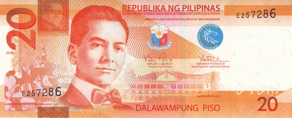 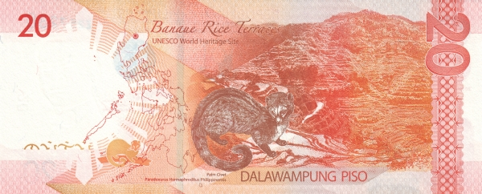Лицевая сторона - портрет Мануэля Кесона, сцена провозглашения филиппинского официальным языком, дворец Малаканьян в Маниле
Обратная сторона - рисовые террасы Банауэ, мусанг
50 песо
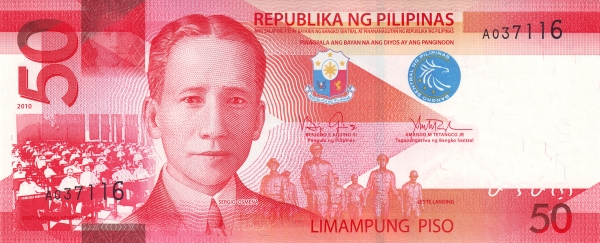 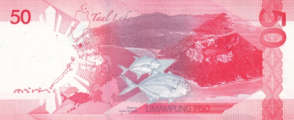Лицевая сторона - портрет Серхио Осменья, первое заседание сената Филиппин, сцена битвы за Лейте
Обратная сторона - озеро Тааль, гигантский каранкс
100 песо
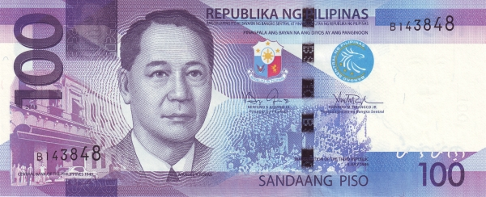 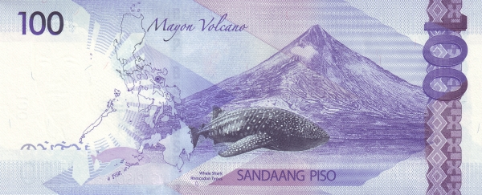Лицевая сторона - портрет Мануэля Рохаса, старое здание Центрального банка Филиппин в Маниле, сцена провозглашения Третьей Республики
Обратная сторона - вулкан Майон, китовая акула
200 песо
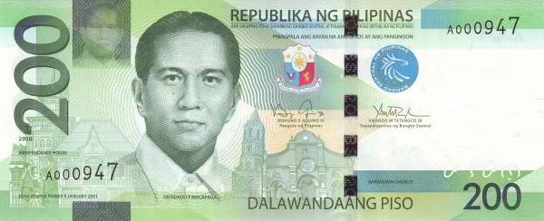 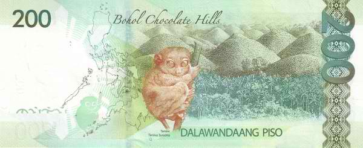Лицевая сторона - портрет Диосдадо Макапагала, дом, где была провозглашена независимость от Испании, церковь Барасоайн в Малолосе
Обратная сторона - шоколадные холмы Бохоля, филиппинский долгопят
500 песо
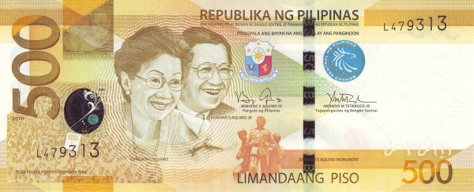 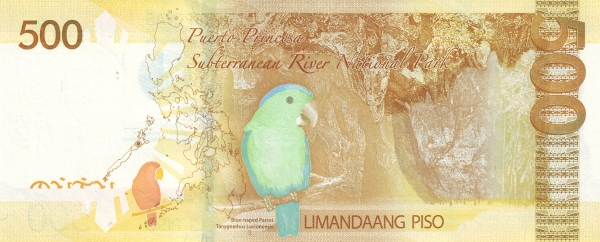Лицевая сторона - портрет Корасон Акино и её мужа Бенигно, толпа во время Жёлтой революции, памятник Бенигно Акино
Обратная сторона - подземная река Пуэрто-Принсеса, большеклювый синешапочный попугай
1000 песо
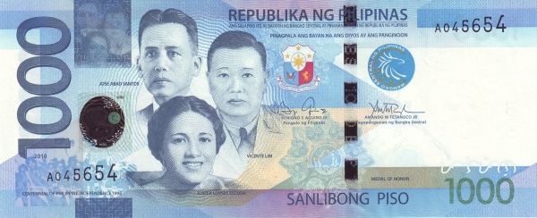 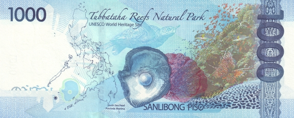Лицевая сторона - портрет Хосе Абада Сантоса, Висенте Лима и Хосефы Эскода, толпа во время празднования 100-летия независимости, орден «Легион Почёта»
Обратная сторона - риф Туббатаха, большая жемчужница